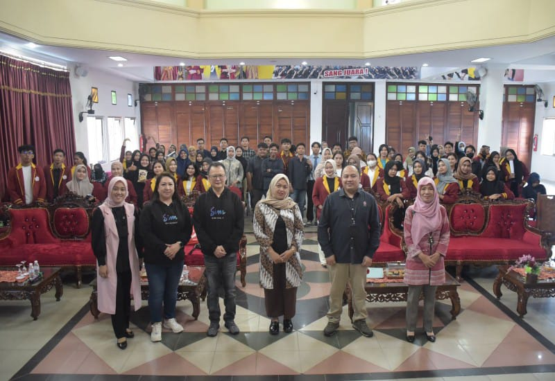

UNIVERSITAS TEKNOKRAT INDONESIA GELAR SEMINAR REKSADANA SINARMAS SEKURITAS
Universitas Teknokrat Indonesia mengadakan Seminar Reksadana Sinarmas Sekuritas. Tujuan program ini dibuat agar memberikan pemahaman kepada mahasiswa terkait ruang lingkup reksadana serta bagaimana mekanisme reksadana. Teknokrat menghadirkan pemateri Rudi Suharto, Head of Relationship Manager PT Sinarmas Sekuritas. Pihak Teknokrat berharap setelah mengikuti seminar ini, mahasiswa lebih memahami mengenai investasi di pasar modal khususnya di reksadana.
27 Maret 2023